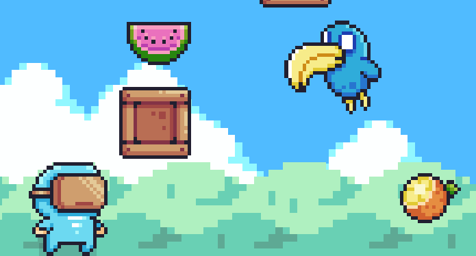

#13 Trending
Epic Games
Blue Agent

Play Now
Watch GamePlay
Em um mundo à beira do caos, o destemido Agente Azul é a última esperança contra o maligno Vilão Porco, um gênio do mal que busca dominar a humanidade. Armado com gadgets avançados e habilidades extraordinárias, ele avança derrotando feras selvagens e superando desafios titânicos. Em uma jornada épica através de terras perigosas e fortalezas sombrias, o Agente Azul se prepara para o duelo final, onde a vitória significará salvar o reino e restaurar a paz. A coragem de um herói pode mudar o curso da história.